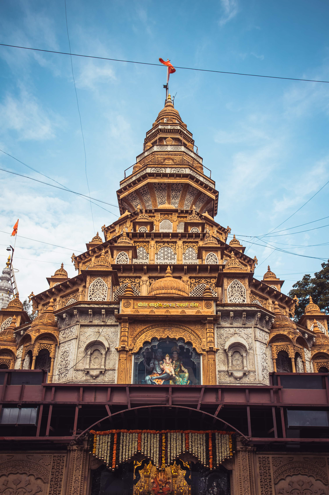

Shanivar Wada
Shaniwarwada, once the seat of the Peshwa governance in Pune is a 286-year-old mansion and is one of the finest examples of architecture in the city. It is now one of the most popular tourist destinations in Maharashtra. This grand mansion was built by the Peshwa Bajirao I himself as the residence of the Peshwas. Although the Wada currently covers an area of 625 acres, in its heyday it covered almost the entire area of the city itself. The place never fails to amaze the visitor with its various forts and fountain, and the majestic statue of Baji Rao I that greets the visitor at the entrance of the palace. Although most of the Wada was destroyed by an unexplained fire in 1828, what remains of it is equally thrilling and majestic.
The Shaniwar Wada, although ridden with tales of treachery and deceit, is one of the last standing testimonies to the grandeur, valour, and the just rule of the Peshwas. The entire old part of the city of Pune is laid out in a chaotic yet ironically, orderly fashion all around this historical structure. It is around Shaniwar Wada that you will find the oldest markets of Pune including Laxmi Road, Tulshibaug, Ravivar Peth etc. It is said that on a full moon night the fort is haunted by the ghost of a former Peshwa king Narayanrao as he was murdered in the palace by his aunt and uncle - Anandi and Raghunathrao. However, there is not a shred of evidence to support such claims. So, you can get a glimpse of history and some drama as well! This was after all the site of the famed romance between Peshwa Bajirao and Mastani Sahiba. In fact, one of the gates has also been named after her!


Shreemant Dagdusheth Temple
A divine place of worship devoted to Lord Ganapati, Shreemant Dagdusheth Halwai Ganapati temple is extremely famous for its religious festivities and is located in Pune, Maharashtra. The temple receives a considerable crowd of devotees every day who come to attend the daily pooja, abhisheka and the Arti of Lord Ganesh. The idol of Lord Ganapati is 2.2 meters high and 1 meter wide and is adorned with almost 40 kilos of gold. The temple receives offerings of gold and money from Lord Ganapati’s devotees every day which goes into the temple’s trust. The temple is open daily from 6 am to 11 pm.
The inception of the temple took place over 125 years ago by Shri Dagdusheth Halwai (sweet maker) and his wife, Lakshmibai. Even today the temple celebrates Lord Ganesh with utmost devotion and grandeur and is visited by celebrities and politicians of Maharashtra. The temple is splendidly decorated with colourful lights during the Ganesh festival and attracts both locals and tourists who come to witness the marvellous celebrations. The Dagdusheth Halwai Ganapati temple trust does not just worship the deity of Lord Ganpati but also serves humanity through various means. The trust is one of the richest in Maharashtra and is utilized to serve humanity by building old ages homes, housing orphan children, establishing cooperative banks, organizing medical camps and ambulance services, facilitating E-learning in school and much more. Atharvashirsha recital which takes place on the fourth day of Ganeshotsav witnesses a gathering of thousands of women for the chanting.

Sinhagad Fort
Located in the Sahyadri Mountains, Sinhagad Fort is an ancient fortress known for its historical significance and architecture. It was once known as Kondhana and has witnessed a number of battles; one notable battle being the 1670 Battle of Sinhagad. The name, “Sinhagad”, literally means Lion’s Fort signifying its strength and brilliance. Today, the structure is a perfect landmark for trekkers as it is located at a height of over 750 metres in the Sahyadri Mountains. In fact, the fort is strategically built right in the centre of the line of Maratha forts built in the Sahyadris. Some of these citadels are the Rajgad Fort, Torna Fort and the Purandar Fort. The place is also famous among photographers and nature lovers.
Sinhagad Fort and its surroundings mostly provide a good environment for a quick getaway. People living nearby often head to the attraction over the weekend. Back in the time, renowned personalities like Bal Gangadhar Tilak, Mahatma Gandhi have also visited the fort for meetings and holidays. The mountain also serves as a great location for training of the National Defence Academy Students. They hike up the hill till the fort in complete battle gear. Due to its historical and cultural significance, there are restrictions on partying, cooking/ consuming non-vegetarian food, alcohol etc. Nonetheless, one is bound to have a great time if they avoid these activities and soak in the dilapidated yet striking structure and the scenic surroundings.

Shivneri fort
Shivneri Fort is the birthplace of the founder of the Maratha Empire, Chhatrapati Shivaji Maharaj. It was built in the 16th century and was recognised as a military fortification. The place is also famous for being the place where Chhatrapati Shivaji Maharaj was trained. Its proximity from Pune, atop a hill with Junnar at its base, makes Shivneri Fort a good picnic spot for the locals. Its sheer magnificence draws a considerable number of visitors each year. Plus, there are some more attractions nearby which can be covered along with the fort in a day.
Those who are always looking for a quiet and quick escape into nature can head to Shivneri. Its terrain makes it a good trekking route too. Having said that, several history lovers are also drawn to the attraction for its historical significance. An English Traveller, Fraze, who visited Shivneri Fort in the late 17th century noticed that the fort was so well managed that it has enough supplies to feed thousands of families for about 6 to 7 years. The ancient architecture and its massive built is also worth a visit to Shivneri Fort.
Pataleshwar Temple
Situated on the Jangli Maharaj Road in Pune, Pataleshwar Cave Temple is enshrined by Lord Pataleshwar- the God of the Underworld, who is a form of Lord Shiva. Carved out of a single magnanimous rock, this spellbinding monolithic find is located right in the heart of the city and is a revered Hindu shrine which is thronged by hundreds of devotees and pilgrims on an everyday basis. What is more, the temple has an exuberant architecture with elaborate carvings on the walls and miniature paintings. Other than Lord Shiva, the temple is also dedicated to Nandi and has idols of other Hindu gods and goddesses as well including Lord Ram, Sita, Lakshmi, Lakshman, Ganesh etc. The construction of the temple was inspired by the majestic Elephanta Caves but it was left incomplete. For the same reason, the temple has no real entrance; the only major entrance iis next to a banyan tree in the courtyard. The temple is maintained by the Archaeological Survey of India (ASI).

Parvati Temple
Brought into existence by the great Peshwa ruler Balaji Baji Rao in the 17th century, and rising to over 2,000 feet, Parvati hill offers a sweeping view of the city of Pune. It is located in the south-east part of Pune. The hill in itself brags of beautiful views away from the hustle and bustle of the city with a pleasant climate throughout the year. It serves as a shrine for several Hindu Gods- God Shiva, Goddess Parvati, God Vishnu, Goddess Rukmini and God Vitthalla, and God Vinayakar. Parvati temple, however, is dedicated to Goddess Parvati and God Shiva.
The hill is accessed by climbing 103 stone steps which were originally designed to allow elephants to ascend and descend from the hill. It doesn't take anyone longer than 10 minutes to reach the top. Resting atop Parvati hill, is a black stone structure, the Parvati temple - settled among the scattering of four other temples, the Peshwa Museum and the Parvati water tank. The Parvati temple is a daily visiting place for a number of local citizens. It is the highest point in Pune. The gates of the temple open at 5.00 am and 8.00 pm.

Vetak Tekdi
Vetal Tekdi is one of Pune's most well-known landmarks. It envelops the entire city and is a stunning place to spend an evening or an early morning. It is known by various names such as Hanuman Tekdi, MIT Tekdi, and Pashan Tekdi.

Lal Mahal
Lal Mahal located near Shaniwar Wada in Pune is a historic landmark of the 16th century. Subject to innumerable attacks and initial revival, the palace has significant stories to tell. It was first restored by Shivaji Maharaj's father Shahaji Bhosle for his family to stay in the 1630s. From being a childhood home for Chhatrapati Shivaji to taking Shaistekhan head-on, this red coloured structure is an architectural marvel depicting craftsmanship and culture of that time.
With a glorious past, The Lal Mahal highlights the valour of the rulers and leaders of that time. It elucidates the lives and heroic acts of the Maratha Kings - something that the Peshwas were known for. There is nothing much that this place exhibits or explains because of continuous harm to the building. Consequently, it leaves much to imagination like how big it was, how many rooms etc. However, things like a Peshwa on guard - protecting the Mahal and a Maratha soldier surmounting a horse take you back in time.

Khadakwasla Dam
Khadakwasla Dam is a famous tourist attraction and a significant work of engineering in Pune. It is built on River Mutha which flows through the city and aids water supply to Pune and its suburban regions. The dam forms a reservoir, called Khadakwasla Lake which offers a quick and pleasant getaway too. Its proximity to Pune City and the scenic surroundings make Khadakwasla Dam a preferred picnic spot. The roadways around Khadakwasla Dam is also a favourite cycling route amongst the city cyclists. Monsoons, in particular, draw a considerable number of people to the attraction. They mostly visit to see the transformation of the landscapes and also enjoy the scenic beauty.
Khadakwasla Dam extends about 1.6 kilometres over River Mutha which actually begins at the confluence of two other rivers, River Ambi and River Mose. These two rivers have Panshet Dam and Varasgaon Dam built over them respectively. They control the water flowing into Mutha from Ambi and Mose. Further, the outflow from the Temghar Dam also entres Khadakwasla Lake. The reservoir thus occupies about 22,000 square kilometres area and runs over 35 metres deep. The dam stands a little over 31 metres tall and is built over the hard rock in the Mutha riverbed. This work of engineering often draws students and enthusiasts too. Otherwise, most people visit to explore the surroundings and other attractions around.